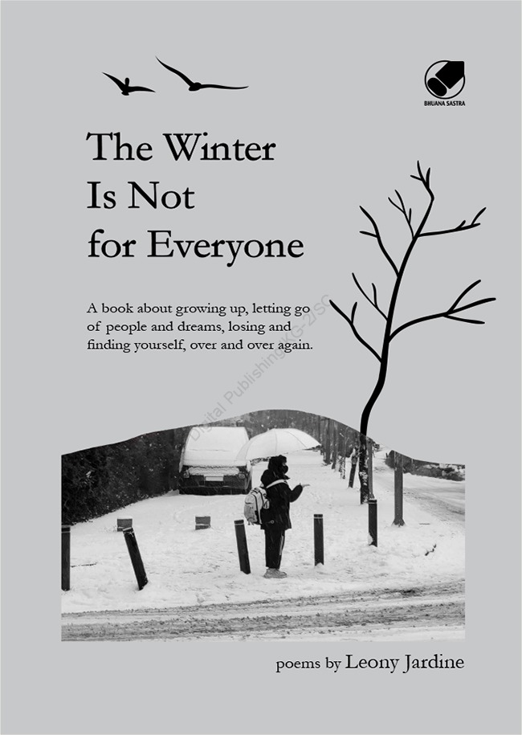

The Winter Is Not For Everyone

"The Winter Is Not for Everyone" by Leony Jardine is a touching read that explores difficult times, using winter as a metaphor for life’s challenges. Jardine’s straightforward yet impactful writing provides solace to those who have faced hardships. The book serves as a reminder that winter eventually gives way to spring, symbolizing hope even during the bleakest periods. If you’ve ever felt adrift or in need of support, this book feels like a cozy embrace on a chilly day.
- the poem is short but full of meaning
- Can comfort in hard times, reminding that storms won't last forever